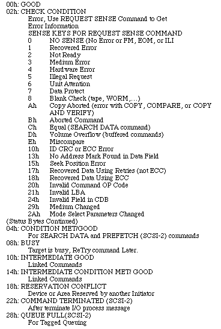

Legacy Document
Important: This document is part of the Legacy section of the ADC Reference Library. This information should not be used for new development.
Current information on this Reference Library topic can be found here:
ADC Home > Reference Library > Technical Notes > Legacy Documents > Hardware & Drivers >
Important: This document is part of the Legacy section of the ADC Reference Library. This information should not be used for new development.
Current information on this Reference Library topic can be found here:
|
IntroductionThis Technical Note discusses detailed information about SCSI and the SCSI Manager that has not been documented in Inside Macintosh Volumes IV and V. This note first discusses the eight different SCSI phases that are supported by the SCSI architecture. This discussion gives a detailed description of what occurs during each phase, which phases are supported by the Macintosh SCSI Manager, and which phases operate differently on Macintosh computers with the 53C96 SCSI chip. This note then goes on to discuss what needs to be done to make a SCSI driver work with virtual memory. The virtual memory section talks about three important points that need to be taken care of in order to make your drive virtual memory-compatible. The last section of this note goes over two final topics. It discusses how SCSI operates differently on the Quadra and provides answers to questions that are often asked about SCSI. What Are the Bus Phases in a SCSI Transaction and the Possible Errors and Information That May Be Passed Back?SCSI is a phase-driven protocol. In order to perform a SCSI transfer, there is a sequence of events (phases) that must be followed in a particular order for a SCSI transfer to complete successfully. The following is a list of the eight different SCSI phases supported by the SCSI architecture (listed in the prescribed order in which they should be called): BUS FREE phase ARBITRATION phase SELECTION phase RESELECTION phase** COMMAND phase* DATA phase* STATUS phase* MESSAGE phase* * The COMMAND, DATA, STATUS, and MESSAGE phases are grouped together as the information transfer phases because they are all used to transfer data or control information via the DATA BUS. ** Disconnection and the RESELECTION phase are not supported by the SCSI Manager.
1. BUS FREE phase The BUS FREE phase indicates that there is no SCSI transaction currently in process and that the SCSI bus is available for connection. The BUS FREE phase is entered when the target releases the BSY signal and both the BSY and SEL signals are simultaneously and continuously false for a minimum of a bus settle delay. Once in the BUS FREE phase, all lines are deasserted and everything is cleared from the data bus. 2. ARBITRATION phase The ARBITRATION phase is invoked using SCSIGet() and occurs when one or more devices call for the bus. In this phase, one SCSI device is allowed to gain control over the SCSI bus so that it can initiate a data transfer. The device with the highest bus ID wins and gains control of the bus. This phase is optional in SCSI-1 and mandatory in SCSI-2. For more information on how arbitration works on the Quadra, please read the section "Is SCSI Different on the Macintosh Quadra?".
3. SELECTION phase This phase is entered after the ARBITRATION phase. The SELECTION phase allows an initiator to select a target for the purpose of initiating a READ or WRITE command. When selection completes successfully, the selected target controls the bus phases. 4. RESELECTION phase RESELECTION is an optional phase that is not supported by the Macintosh. It allows a target to reconnect to an initiator so that it may continue an operation that was previously started by the initiator but was suspended by the target (that is, the target disconnected by allowing a BUS FREE phase to occur before the operation was complete). Again, this phase is not supported by the Macintosh SCSI Manager. 5. COMMAND phase The COMMAND phase is driven by the target. Once a target is selected it normally enters into COMMAND phase. The SCSI command interface in the Macintosh operating system allows software on the Macintosh to deliver a command to the target device. (It is delivered in the CDB data structure.) 6. DATA phase DATA phase is a collective term that includes the DATA IN phase and DATA OUT phase. The DATA IN phase allows the initiator to receive data or parameters from the target. The DATA OUT phase allows the target to receive data or parameters from the initiator. Calls used in the DATA phase are SCSIRead, SCSIWrite, SCSIRBlind, or SCSIWBlind. 7. STATUS phase The STATUS phase allows the target to deliver status information back to the initiator. The status values are defined as follows: 
8. MESSAGE phase MESSAGE phase is a collective term that references either a MESSAGE IN or a MESSAGE OUT phase. More than one message may be sent during either phase. Multiple-byte messages have to be completely contained within a single MESSAGE phase. A MESSAGE IN phase allows the target to request that message(s) be sent to the initiator from the target. The MESSAGE OUT phase allows the target to request that message(s) be sent from the initiator to the target. The target will invoke this phase when responding to an attention condition created by the initiator. The attention condition allows the initiator to inform a target that the initiator has a message ready. The target performs a MESSAGE OUT phase so that it can retrieve this message.
The Macintosh Operating System software interface for handling STATUS phase and MESSAGE phase is in the SCSIComplete call. SCSIComplete dispatches the SCSI Manager to receive a status byte and a message byte. The target will generally release the bus after it has sent its message byte. The status and message byte indicate the target's response to the integrity of the COMMAND and DATA phase transactions. SCSIComplete will return noErr if the act of getting the status and message bytes was successful. This means that the caller should always check the "VAR stat" and message bytes to determine whether the SCSI transaction was successful. As it states in Inside Macintosh Volume IV, page 2-91, "SCSIComplete gives the current command 'wait' number of ticks to complete." The 'wait' parameter given in the SCSIComplete interface defines how long the SCSI Manager will wait (from the time SCSIComplete is dispatched) for the target to provide a valid STATUS phase on the bus. Once it has received the valid status byte, the SCSI Manager will wait for another time-out period (defined in the SCSI Manager) for a message byte. (This time-out period is not a constant value across all machines.) If you do not receive a message byte within the time-out period, SCSIComplete will return an error of scCommErr. If a call to SCSIComplete is made and the target device is not asserting a valid STATUS phase (that is, is in STATUS phase and asserting REQ), the SCSI Manager will do what it can to move the target to STATUS phase. If the target is not asserting /REQ then the SCSI Manager wil just wait until the "wait" ticks have expired. If the Target is asserting /REQ and the phase is something other than STATUS phase, then the SCSI Manager will receive or deliver data until STATUS phase is obtained. This is the notion of bit-bucketing.
Error Codes returned by SCSIComplete: noErr--means that upon entry, SCSIComplete saw that the target was ready to transfer information--REQ asserted--and that it found the target in STATUS phase. It then transferred both the status and message bytes without any problems and both are valid. scComplPhaseErr--means that upon entry, SCSIComplete saw that the target was ready to transfer information--REQ was asserted--and that it was not in STATUS phase. It proceeded to bit-bucket the data or send fill data in order to coax the target into STATUS phase. Once the target is in STATUS phase, it transferred both the status and message bytes without any problems and both are valid. * When receiving a phase error, the first thing to check is whether your TIBs indicate a block size of data that your device is expecting to receive. Example 1: When there is less data to be sent than requested: If you have sent only 10 bytes, and SCSIComplete is expecting a total of 100 bytes, SCSIComplete will give you 90 filler bytes to fulfill the transfer quota. Example 2: When there is more data to be sent than requested. Any data left over ( after the amount requested has been successfully transferred) will be discarded. scPhaseErr--doesn't get returned since scComplPhaseErr or scCommErr overrides this code. scCommErr--pretty much a catchall for anything the SCSIComplete couldn't handle. These are the possible reasons for receiving scCommErr from SCSIComplete: 1. SCSIComplete detected no REQ from the target when it expected REQ asserted. 2. SCSIComplete detected REQ when it expected the target to deassert REQ. 3. No device was connected. 4. There was improper termination in the system setup. 9. BUS FREE phase Once the bus has gone to the BUS FREE phase, the target is no longer in control of the bus. At this point you are free to proceed with another SCSI transaction. There is also a SCSICommand called SCSIReset that can cause you to immediately skip to this phase. SCSIReset is used to force the SCSI bus to go to the BUS FREE phase. You should use this if you find yourself being hung during a SCSI transaction and you have no other way to get out. Otherwise, if you use SCSIReset during a transaction where it may be returned with an error, you will end up clearing the bus without having any information as to where, why, or if an error could have occurred. Also, if you use SCSIReset you can cause other peripherals on the bus to assert UNIT Attention. This can cause some major problems. For example, we have seen a SCSIReset cause a printer to assert UNIT Attention. The end result was that the printer kept spewing out tons of paper and this was a major loss to the owner because each sheet cost $5.00. Therefore, SCSIReset is not recommended except in extreme cases such as a system hang (which is very rare). The best way to demonstrate the use of these calls is with the following piece of code, which is an example of how one would do a SCSIWrite. The key thing to remember here is that the target is in control of the bus from the time it has been selected until the time the bus returns to the BUS FREE phase. If you try to interrupt the command sequence (that is, take control of the bus during this time), you will undoubtedly hang your system. Example of SCSIWrite
What Must I Do for My SCSI Driver to Work With Virtual Memory?Even though virtual memory and SCSI drivers operate at the same system level, a SCSI driver is blind to whatever is going on in the virtual memory environment (or anything going on at any other level). The SCSI driver merely responds to I/O requests. For a SCSI driver to work with virtual memory, it should take care of the following: 1. A SCSI driver must be reentrant. Virtual memory does prevent reentering a SCSI driver most of the time by declaring paging to be unsafe when a backing store is busy. The problem is if there is only one copy of the driver in memory and it is supporting multiple drives. In this case, the same driver is installed into the unit table multiple times and it is possible to sneak around virtual memory and reenter the driver. The "reentrancy" that is required to handle this case is to avoid modifying driver globals referencing the "current drive." That is, each drive requires its own independent set of variables. Reentrancy on a driver is not conditional. A driver must be either "always reentrant" or "always not reentrant." It is not something that can be turned "on" or "off." For a SCSI driver to operate with virtual memory, it must be "always reentrant." The concept of reentrancy was best defined by Craig Prouse in a document he wrote on virtual memory. The following is Craig's description of this concept taken directly from his document: Reentrancy is a concept related to exception handling, notably interrupts. Say a piece of code is performing its function and it is interrupted (like by a Time Manager Task). It is generally interrupted in some undefined state. If the interrupt handler were to call the same function, the function would restart, probably with a new set of local variables, but in general functions are more complicated than that. They keep global variables to indicate the status of some operation, and they may be in the middle of moving a block of data. In the course of running the function again at interrupt level, some or all of this information most likely gets mangled so that the function cannot be resumed properly after the interrupt. This is exactly why you cannot call the Memory Manager at interrupt time. The Memory Manager is not reentrant. The point of making a piece of code reentrant is so that it can be called at any time, even interrupt time, and it will never mangle its own data that it needs to resume an interrupted operation. It is almost like recursion but you may be called at any time; the reentrant case is when you are called after being interrupted yourself. Writing reentrant code is difficult because you are largely limited to modifying data only within your current local scope. You definitely cannot modify global variables pertaining to your operational status at the time you were interrupted.
2. A driver should not cause a page fault if a bus transaction is already in progress. Therefore, it is the responsibility of your SCSI driver to ensure that a page fault does not occur. This means that the driver must properly hold all buffers that it will be using during a SCSI transaction. If all data structures and buffers are being held properly, any events occurring outside the SCSI transaction will not affect the transaction itself. Reentrancy is discussed in M.ME.VMMemoryMapping as follows: Since VM depends on the SCSI bus to handle the page fault, a page fault is forbidden to happen while the SCSI bus is busy. Code which uses the SCSI Manager needs in general to ensure that all its code, buffers, and data structures (including TIBs) are held in REAL memory before taking control of the bus. 3. Do not worry about being affected by interrupts. Interrupt handlers can occur while you have hold of the bus but there is no way that they can take control of the bus. Interrupt handlers can ask at any time if they can access the bus through the SCSI Manager but they will be denied access if a transaction is already in progress. The only time an interrupt handler can do anything is when you have completed a SCSI transaction and the target is no longer holding the bus. An interrupt handler that occurs anywhere outside this transaction (that is, before you successfully SCSIGet the bus and after you SCSIComplete) may ask if it can get hold of the bus. Only at this time can an interrupt handler get permission to take hold of the bus and perform its own transaction. It is strongly advised that interrupt handlers do not perform SCSI transactions. Is SCSI Different on the Macintosh Quadra?SCSI is the same on the Macintosh Quadra as it is on all the other Macintosh models. It uses the same SCSI Manager and therefore you use the same SCSI commands and do the same SCSI operations that you do on all other machines. There are two exceptions, though. The two exceptions are with SCSIStat() and SCSIGet(). On all other Macintosh systems the SCSIStat() function returns bus information that is retrieved from the NCR 53C80 SCSI chip. Because the Quadra has a different SCSI chip (53C96) from our other systems (53C80), the SCSI Manager is not able to return bus information from any part within the transaction. The SCSIStat() call has therefore become unreliable for determining valid phases on the Quadra due to this hardware change. This also means that the SCSIStatus REQ signal cannot be reported to you on the Quadra. Therefore, if you are using an application on the Quadra that calls SCSIStat() for the purpose of determining the SCSI phase, the values that are returned should be completely ignored. Otherwise, SCSI is the same on the Quadra as it is on other Macintosh models. Use the same SCSI transactions that you have used on other Macintosh models. The second exception is with SCSIGet(). On all other Macintosh systems, the ARBITRATION phase corresponds to the SCSIGet() function. Therefore, SCSIGet() is the first call that is made to begin a SCSI transaction. On the Quadra, the ARBITRATION phase of the SCSI bus is invoked on entry to the SCSISelect function, just prior to undertaking the selection process. This means that on the Quadra, arbitration and selection are done as a single atomic unit. (From SCSISelect() to SCSIComplete everything occurs normally, that is, one phase per call.) SCSIGet() and SCSISelect() are no longer distinctly viewed as separate calls by the 53C96. This does not neccessarily mean that you should not have to call SCSIGet() anymore. The SCSI state machine is still altered by the use of SCSIGet(). When SCSIGet() is called, the state machine is informed that the bus is now busy. Therefore, even though the 53C96 does not explicitly recognize the SCSIGet() function, you should always call SCSIGet() to ensure that the state machine is being properly set up. This also means that you should not be changing the way you set up a SCSI transaction on the Quadra. You should call SCSIGet(), SCSISelect(), and so on as you would on all other Macintosh systems. This is the only other difference between SCSI on Quadra systems and SCSI on other Macintosh computers. What Is the Best Way to Tell if a Device Is Busy?There are many times when you want to determine if a device is ready to transfer data (after powering on a device, rebooting, and so on). The best way to accomplish this is to read a block of data from the device. Others have tried different techniques for checking to see if a device is busy. The two calls most often used are SCSISelect() and SCSIInquiry(). Having a successful SCSISelect() and SCSIInquiry() does not necessarily indicate whether the device is ready to transfer data or not. The best way to tell whether or not a device is ready is by going ahead and trying to read a block of data from the device. What Is the Best Way to Tell if the Bus Is Busy?The SCSI Manager's single rule is that once a target is selected, the target controls the phases of the bus. Therefore, it is not useful for you to call SCSIStat() when a transaction is occurring. Calling SCSIGet() is truly the best way for you to see if the SCSI bus is busy. If the bus is busy, SCSIGet() will pass back an error. Once the bus is free, SCSIGet() will give you the control of the bus (noErr), and you are free to perform your SCSI command sequence. On the Quadra you will not know if the bus is free until after the SCSISelect() phase. This is because the Quadra treats SCSIGet() differently. The section "What Happens if the Bus Is Busy When I Call SCSISelect on the Quadra?" describes how you will know if the bus is not free in greater detail. How Much Time Should There Be Between Bytes?For Blind SCSI transfers there should be no more than 16 microsecond spaces between bytes. (This value applies to every Macintosh except the SE and the Plus. On the SE there should be no more than a 250 microsecond space, and on the Plus there should be no more than a 6 microsecond space.) Also, the SCSI Manager expects and handles bus errors relating to the `Blind Transfer handshake. If you are using more than 16 microseconds of space between bytes, you will not be able to rely on the SCSI Manager's bus error handler. The bus error handler is not guaranteed to work completely or to recover from a bus error. If you need to put large time spaces between bytes, we recommend that you include breaks (loops) in your TIB or do slow Reads and Writes. The ROM handles all of the handshaking for nonBlind SCSI data transfers. Therefore, it does not matter how much space is between bytes in a nonBlind data transfer. ConclusionAfter reading this Technical Note you should know more about the eight different SCSI phases that are supported by the SCSI architecture, what needs to be done to make a SCSI driver work with virtual memory, and how SCSI operates differently on the Quadra. This note gave a detailed description of what occurs during each of the eight SCSI phases supported by the Macintosh SCSI Manager. It also discussed the phases that operate differently on Macintoshs with the 53C96 SCSI chip. The virtual memory section talked about three important points that need to be taken care of in order to make your drive virtual memory-compatible. The last section of this note went over SCSI on the Quadra and provided answers to questions that are often asked about SCSI. ReferencesInside Macintosh, Volume IV, SCSI Manager Chapter Inside Macintosh, Volume V, SCSI Manager Chapter New SCSI Manager Chapter available on Developer CD Series Developer CD Series disc: Contains the snippet SCSIInquiry.p AcknowledgementsSpecial thanks to James Blair and Craig Prouse for their help on this Technical Note. Downloadables
|
|